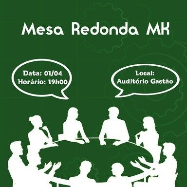
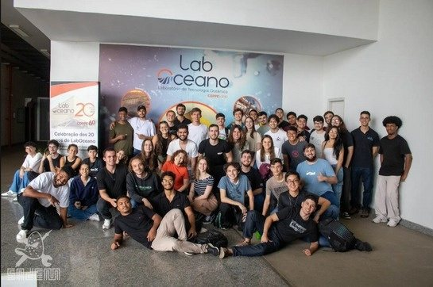
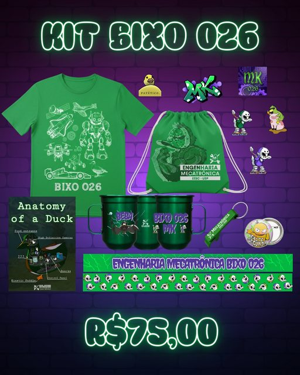
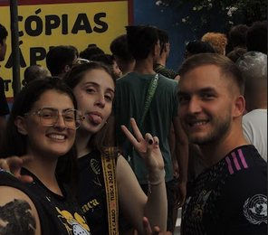
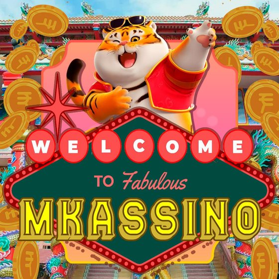
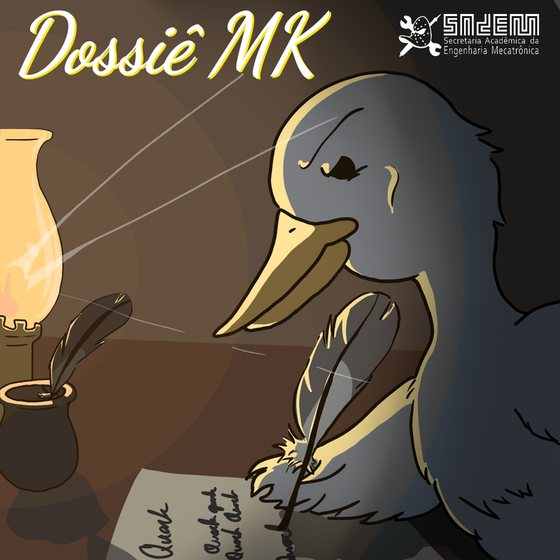
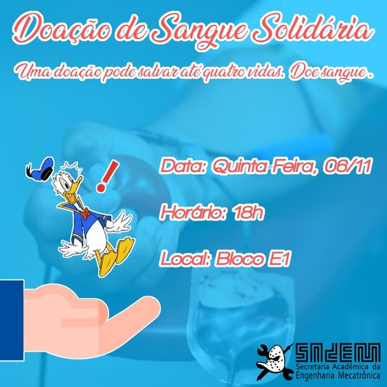
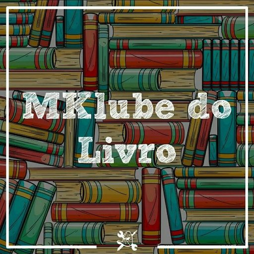

Acadêmico
Quack
Acompanha a qualidade do curso e o bom andamento da graduação por meio de feedbacks, diálogo com docentes e eventos acadêmicos.
Cada núcleo atua em uma frente específica da secretaria. Selecione um dos cartões abaixo para ver o resumo e use o botão “Saiba mais” para abrir as informações detalhadas.
Acompanha a qualidade do curso e o bom andamento da graduação por meio de feedbacks, diálogo com docentes e eventos acadêmicos.
Difunde conhecimento na Mecatrônica com minicursos, visitas técnicas, aulões e outras atividades formativas.
Cuida da idealização e da venda dos produtos do curso, como kits, camisetas e itens representativos da Mecatrônica.
Promove a integração dos estudantes com atividades de convivência e ações que deixam a graduação mais leve.
Integra os alunos por meio de práticas esportivas, campeonatos, eventos e e-sports.
Produz artes, peças de divulgação e registros visuais das ações da SAdEM.
Organiza campanhas e eventos com impacto positivo dentro e fora da universidade.
Promove integração por meio de manifestações culturais, artísticas, grupos de discussão e eventos temáticos.
Qualidade do curso, feedbacks, fóruns acadêmicos e diálogo constante com a comunidade da Mecatrônica.

O Quack é o núcleo responsável pela manutenção da qualidade do curso e pelo acompanhamento do seu bom andamento. Sua atuação envolve coleta de feedbacks, organização de eventos de cunho acadêmico, comunicação frequente com professores e aproximação com ex-alunos para fortalecer o debate sobre a formação em Mecatrônica.
Minicursos, visitas técnicas e atividades que difundem conhecimento entre os alunos.

O Educk é o núcleo educacional responsável pela propagação do conhecimento entre os alunos da Engenharia Mecatrônica. Sua atuação ocorre por meio de minicursos, visitas técnicas, aulões e iniciativas que ampliam a formação acadêmica e aproximam os estudantes de oportunidades dentro e fora da USP.
Planejamento e comercialização dos produtos do curso.

O MKado é o núcleo responsável pela idealização e pela venda dos produtos do curso. Ele organiza campanhas de comercialização, pensa novas peças relacionadas à identidade da Mecatrônica e mantém o contato com fornecedores e com a comunidade interessada nos itens do curso.
Integração estudantil por meio de convivência, recepção e atividades coletivas.

O núcleo Eventos é voltado à integração dos estudantes com diferentes tipos de atividades, especialmente aquelas ligadas à convivência e ao acolhimento. A proposta é organizar experiências que aliviem a rotina da graduação, aproximem os alunos e fortaleçam o senso de comunidade do curso.
Integração por esportes convencionais e e-sports.

O núcleo Esportes busca promover a integração dos alunos por meio da organização e realização de eventos esportivos, contemplando tanto modalidades convencionais quanto e-sports. A atuação do núcleo fortalece a convivência e amplia a participação estudantil em ações competitivas e recreativas.
Artes, divulgação e registro visual das ações da SAdEM.

O MKting é o núcleo responsável pela criação de artes para divulgação de eventos e produtos, além do registro fotográfico das atividades da secretaria. É a frente que organiza a comunicação visual da SAdEM e sustenta a divulgação das ações para a comunidade.
Campanhas, arrecadações e ações com impacto positivo na sociedade.

O Social organiza eventos e iniciativas que buscam afetar positivamente a sociedade dentro e fora da universidade. Entre as ações estão campanhas de doação, arrecadações, eventos em escolas, ONGs, canis e outras atividades voltadas ao impacto social e à responsabilidade coletiva.
Integração por meio de arte, cultura e grupos temáticos.

O MKultural é um núcleo de integração que promove manifestações artísticas e culturais dos alunos da Mecatrônica. Seu objetivo é estimular desenho, música, teatro, artesanato, escrita, cosplay, jogos e outras formas de expressão por meio de eventos, clubes e espaços de discussão.
Os eventos ficam vinculados aos núcleos responsáveis por cada frente. Esta seção funciona como uma vitrine de formatos de evento que podem ser atualizados conforme o calendário real da gestão.
Atividades voltadas à qualidade do curso, discussão de demandas acadêmicas, conversa com docentes, acompanhamento da grade e aproximação com ex-alunos.
Eventos para complementar a formação técnica dos alunos, com foco em aprendizagem prática, contato com empresas, laboratórios e temas de engenharia.
Ações de acolhimento, integração entre turmas e momentos de convivência que ajudam os alunos a se inserir melhor no curso.
Atividades esportivas e recreativas, incluindo modalidades presenciais, campeonatos internos e eventos ligados a jogos e competição.
Doações, arrecadações, visitas, campanhas solidárias e demais iniciativas que conectam os estudantes com demandas da sociedade.
Eventos voltados a expressão cultural, clubes, discussões, jogos, música, literatura, artes e outras formas de integração por cultura.